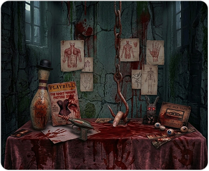
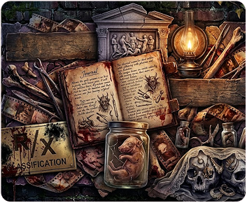
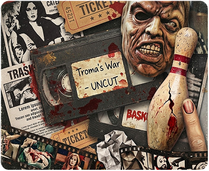
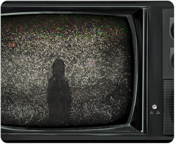
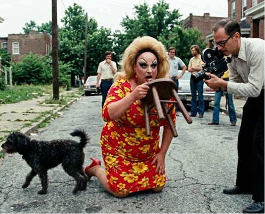
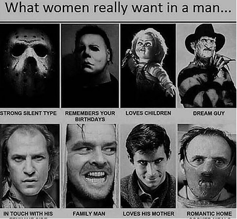
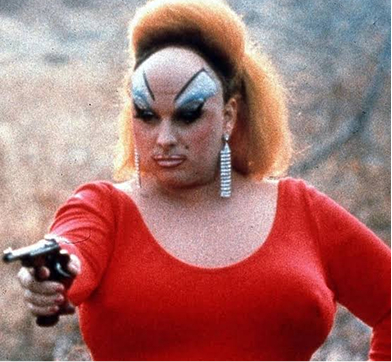
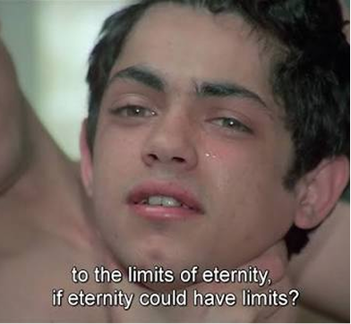
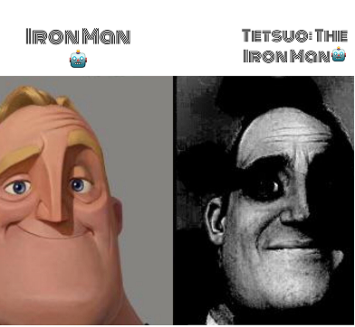

¿Qué carajos vi?
Sobre esto
Un espacio dedicado al cine más bizarro, transgresor y fuera de lo común. Aquí no hay espacio para las películas normales: exploramos desde el cine de culto y las joyas del trash, hasta la clasificación R y X más extrema. Encontrarás reseñas sin censura, datos curiosos, memes y el análisis de las peores (o mejores) aberraciones fílmicas que existen. Este es el refugio definitivo para los cinéfilos insomnes, los amantes del gore, el camp, la serie B y el terror psicológico más perturbador. Nos adentramos sin miedo en las profundidades del celuloide olvidado, rescatando cintas malditas que los algoritmos comerciales prefieren ignorar. Queremos cuestionar los límites del buen gusto, debatir sobre directores incomprendidos y construir una comunidad que celebre la belleza que se esconde dentro de lo grotesco y lo marginal.
Peliculas
Cine de Culto

Obras extravagantes con un público fiel y obsesivo que desafían el cine convencional.
Clasificación R

Cine extremo y transgresor con contenido explícito, violencia gráfica, tabúes o erotismo sin censura.
Cine Basura

Películas de bajo presupuesto que celebran lo absurdo, lo cutre y los efectos grotescos...
Archivos Malditos

Películas difíciles de encontrar, obras olvidadas y rarezas cinematográficas escondidas en los rincones más oscuros del cine.
Ficha técnica bizarra
El archivo sin censura con el lado más oscuro, perturbador y absurdo del cine. Aquí no encontrarás los datos aburridos de la producción habitual, sino la letra pequeña que pocos se atreven a contar: desde el icónico momento en que Divine comió excremento real en Pink Flamingos, hasta rituales extraños en los rodajes, accidentes grotescos, presupuestos irrisorios y las festividades insólitas que nacieron en los pueblos donde se filmaron estas aberraciones. Desde producciones clandestinas y obras malditas hasta rarezas olvidadas que encontraron una segunda vida como clásicos de culto, cada historia revela una cara diferente de una industria donde la imaginación puede convertirse en obsesión. También conocerás las reacciones del público, las polémicas que rodearon sus estrenos y los detalles insólitos que transformaron algunas películas en auténticos fenómenos underground.

El dato más famoso y perturbador de la película es que Divine comió excremento real de perro. John Waters esperó pacientemente con la cámara a que el perro de un vecino hiciera sus necesidades en la acera. Tan pronto como el animal terminó, Divine lo recogió del suelo y se lo comió frente a la cámara Para demostrar que no había trucos de edición, la filmaron en una sola toma continua. Divine tuvo que llamarse de inmediato al hospital para recibir instrucciones de cómo lavarse el estómago. des pués de la grabación, Divine tuvo que consultar sobre las precauciones sanitarias necesarias tras ingerir el material. John Waters aprovechó el momento y lo filmó de manera continua, convirtiéndolo en una secuencia tan impactante como difícil de olvidar.la escena buscaba romper los límites del cine convencional y desafiar las normas sociales sobre lo que podía mostrarse en pantalla.
¿Sabías que…? John Waters convirtió una escena de apenas unos segundos en uno de los momentos más famosos del cine de culto, demostrando que, a veces, una sola secuencia puede definir la reputación de toda una película.
Muro del caos




2026 ¿Qué carajos vi?. All rights reserved